Last updated: 2021-05-26
Checks: 7 0
Knit directory: Networks_HW_S2021/
This reproducible R Markdown analysis was created with workflowr (version 1.6.2). The Checks tab describes the reproducibility checks that were applied when the results were created. The Past versions tab lists the development history.
Great! Since the R Markdown file has been committed to the Git repository, you know the exact version of the code that produced these results.
Great job! The global environment was empty. Objects defined in the global environment can affect the analysis in your R Markdown file in unknown ways. For reproduciblity it’s best to always run the code in an empty environment.
The command set.seed(20210409) was run prior to running the code in the R Markdown file. Setting a seed ensures that any results that rely on randomness, e.g. subsampling or permutations, are reproducible.
Great job! Recording the operating system, R version, and package versions is critical for reproducibility.
Nice! There were no cached chunks for this analysis, so you can be confident that you successfully produced the results during this run.
Great job! Using relative paths to the files within your workflowr project makes it easier to run your code on other machines.
Great! You are using Git for version control. Tracking code development and connecting the code version to the results is critical for reproducibility.
The results in this page were generated with repository version 7a597c1. See the Past versions tab to see a history of the changes made to the R Markdown and HTML files.
Note that you need to be careful to ensure that all relevant files for the analysis have been committed to Git prior to generating the results (you can use wflow_publish or wflow_git_commit). workflowr only checks the R Markdown file, but you know if there are other scripts or data files that it depends on. Below is the status of the Git repository when the results were generated:
Ignored files:
Ignored: .Rhistory
Ignored: .Rproj.user/
Untracked files:
Untracked: analysis/infomap
Untracked: data/1_0.3_edge_mer.css.ss.5.tsv
Untracked: data/1_0.3_node_mer.css.ss.5.tsv
Untracked: data/2_0.3_edge_dom.css.ss.5.tsv
Untracked: data/2_0.3_node_dom.css.ss.5.tsv
Untracked: data/3_0.3_edge_wil.css.ss.5.tsv
Untracked: data/3_0.3_node_wil.css.ss.5.tsv
Untracked: data/4_0.3_edge_phy.css.ss.5.tsv
Untracked: data/5_0.3_edge_dom.phy.ss.5.tsv
Untracked: data/6_0.3_edge_wil.phy.ss.5.tsv
Untracked: data/7_0.3_edge_fun.css.ss.5.tsv
Untracked: data/8_0.3_edge_dom.fun.ss.5.tsv
Untracked: data/9_0.3_edge_wil.fun.ss.5.tsv
Untracked: data/Chesapeake_bay_links.csv
Untracked: data/Chesapeake_bay_nodes.csv
Untracked: data/Dunne2013PBioSupData.xlsx
Untracked: data/M_PA_003.csv
Untracked: data/NEE2017_nodes.csv
Untracked: data/Otago_Data_Links.csv
Untracked: data/Otago_Data_Nodes.csv
Untracked: data/Pilosof_2017NEE_interlayer_hosts.csv
Untracked: data/Pilosof_2017NEE_interlayer_parasites.csv
Untracked: data/Pilosof_etal_NEE2017_1.csv
Untracked: data/Pilosof_etal_NEE2017_2.csv
Untracked: data/Pilosof_etal_NEE2017_3.csv
Untracked: data/Pilosof_etal_NEE2017_4.csv
Untracked: data/Pilosof_etal_NEE2017_5.csv
Untracked: data/Pilosof_etal_NEE2017_6.csv
Untracked: data/Tur2016.csv
Untracked: data/Ural_valley_A_HP_048.csv
Untracked: data/chilean_NTIneg.txt
Untracked: data/chilean_NTIpos.txt
Untracked: data/chilean_TI.txt
Untracked: data/chilean_metadata.xls
Untracked: data/kongsfjorden_links.RData
Untracked: data/kongsfjorden_nodes.RData
Untracked: data/siberia1982_7_links.RData
Untracked: data/siberia1982_7_nodes.RData
Untracked: data/vizentin-bugoni_et_al_2016_complementary.xlsx
Untracked: infomap-script.py
Untracked: infomap.exe
Unstaged changes:
Deleted: analysis/Infomap_HW.Rmd
Modified: analysis/Networks_HW3.Rmd
Note that any generated files, e.g. HTML, png, CSS, etc., are not included in this status report because it is ok for generated content to have uncommitted changes.
These are the previous versions of the repository in which changes were made to the R Markdown (analysis/Networks_HW7.Rmd) and HTML (docs/Networks_HW7.html) files. If you’ve configured a remote Git repository (see ?wflow_git_remote), click on the hyperlinks in the table below to view the files as they were in that past version.
| File | Version | Author | Date | Message |
|---|---|---|---|---|
| Rmd | 7a597c1 | KiseokUchicago | 2021-05-26 | HW7 |
Professor: Mercedes Pascual, Sergio A. Alcala Corona, Shai Pilosof, Carlos Serván
Student: Kiseok Lee
library(igraph)
library(tidyverse)
library(magrittr)
library(MASS)
library(RColorBrewer)
## theme for ggplot
mytheme <- theme_bw() + theme(
legend.title = element_text( size=17),
# legend.position = "bottom",
# legend.direction = "horizontal",
legend.key = element_blank(),
legend.text = element_text( size=17),
panel.background = element_blank(),
panel.grid = element_blank(),
text = element_text( family="Helvetica", size=19),
strip.text.x = element_text(family = "Helvetica", size = 10),
strip.text.y = element_text(family = "Helvetica", size = 10),
panel.border = element_rect( colour = "black", size=1.3),
axis.ticks = element_line(size = 1.3),
strip.background = element_rect( fill = "transparent", size = 1.3, colour = "black" ),
strip.text = element_text(size = 19)
)In this lab we are going to model the community matrix M as a random matrix. We start with the work of May (1973), which addressed the simplest case. We then explore the results of Allesina and colleagues, probing at each step the influence of different ecological features on the local stability of the community.
Generally, we can analyze the local stability of an equilibrium point of a system of S functions and S variables by linearizing the functions and obtaining the Jacobian matrix J evaluated at the equilibrium (notice that there can be more than one equilibrium point). This is represented by the community matrix M. May sampled the entries of M from a uniform distribution and assumed that the entries Mij are i.i.d random variables with mean μ=0 and variance σ=1. Each entry represents the effect of species j on the population of species i. Therefore, the diagonal elements Mii represent the effect of each species on itself (self-regulation). May set the diagonal to d=−1. We will see later that these assumptions can be relaxed.
The eigenvalues of M characterize the dynamics of the system “close” to equilibrium. There are S eigenvalues, and these are distributed approximately uniformly within a circle with a radius √S. To obtain a radius equal to 1, we can divide the off-diagonal values of M by √S.
# Here sigma=1
S <- 500
M <- matrix(runif(S^2, min = -sqrt(3), max = sqrt(3)), S, S) # We use sqrt(3) so the sd of the uniform distribution will be 1)
diag(M) <- -1
e <- eigen(M, only.values = TRUE)$values ## compute the eigenvalues of M
data_eigenvalues <- tibble(x = Re(e), y = Im(e), S = S) ## data frame storage useful for plotting with ggplot
data_eigenvalues %>% ggplot(aes(x = x, y = y)) + geom_point() + mytheme + coord_fixed() + geom_vline(xintercept = -1, color='blue')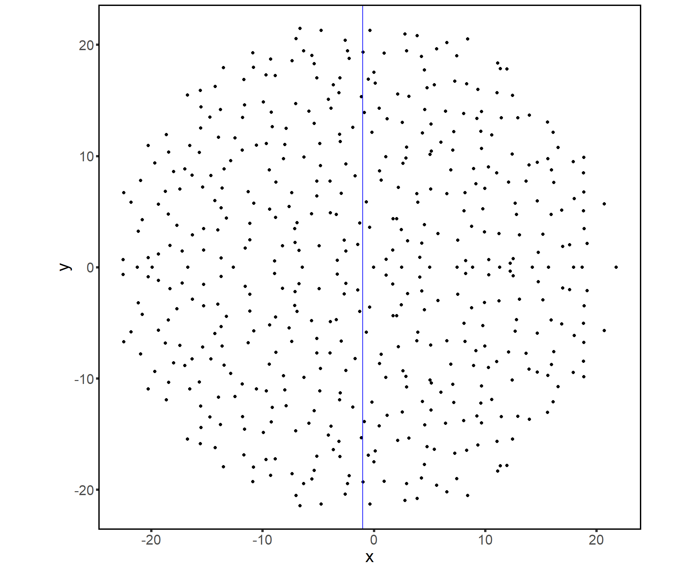
M will be locally stable when all the real parts of the eigenvalues are negative (max(Re(λ))<0. We can visualize the expected eigenvalues boundaries by drawing a circle whose perimeter determines these boundaries.
expectation_girko <- tibble(x = rep(seq(-1,1,0.001), 2),
type = rep(c(1, -1), each = length(x)/2),
y = sqrt(1 - (x)^2) * type)
expectation_girko %<>% mutate(x = sqrt(S) * x,
y = sqrt(S) * y)
data_eigenvalues %>% ggplot(aes(x = x, y = y)) +
geom_point() +
geom_path(data = expectation_girko, colour = "red") +
mytheme +
xlab(expression(Re(lambda))) +
ylab(expression(Im(lambda)))+coord_fixed()+ geom_vline(xintercept = -1, color='blue')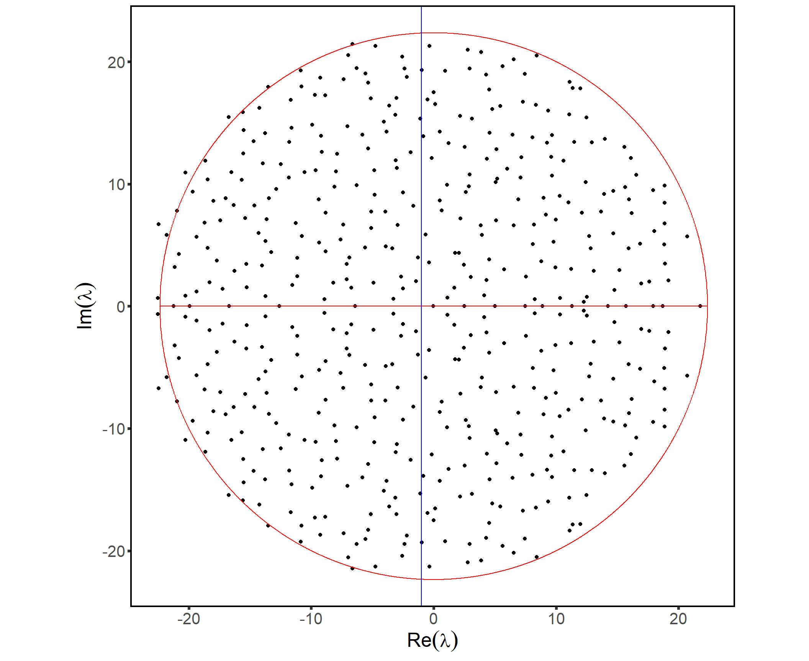
The matrix in this section is not stable. How can you make it stable? Show.
Until now we have only used May’s results. Now we can probe how playing with some features of M will change local stability. σ will change the radius of the circle and d will shift its center. Note that S−−√ normalizes the radius of the circle to be σ. The diagonal represents the self regulation of species. Intuitively, stronger self-regulation will stabilize the system (shift the center of the circle to the left). The determination of the rightmost eigenvalue will be a result of both d and σ.
S <- 500
sigma_seq <- c(0.5, 1, 1.5) # A sequence of sigma values
diag_seq <- c(-3, 0, 3) # A sequence of values for the diagonal
# This function creates a random matrix with a given sigma and d, and returns the ev.
get_eigenvalues_sigma_d <- function(sigma, d){
M <- matrix(runif(S^2, min = -sqrt(3)*sigma, max = sqrt(3)*sigma), S, S)/sqrt(S) # Normalize by square root of S
M <- M + diag(S) * d # Shift the diagonal
e <- eigen(M, only.values = TRUE)$values
return(tibble(x = Re(e), y = Im(e), S = S, d = d, sigma = sigma))
}
# Get the ev of random matrices for each combination of sigma and d
data_ev_sigma_d <- NULL
for (sigma in sigma_seq){
for (d in diag_seq){
data_ev_sigma_d <- rbind(data_ev_sigma_d, get_eigenvalues_sigma_d(sigma, d))
}
}
data_ev_sigma_d %>% arrange(desc(sigma)) %>% ggplot(aes(x = x, y = y, colour = factor(sigma))) +
geom_point(size = 2.5, alpha = 0.5) +
mytheme +
xlab(expression(Re(lambda))) +
ylab(expression(Im(lambda))) +
scale_colour_discrete(name = expression(sigma)) +
coord_fixed() +
facet_grid(d~.) +
scale_x_continuous(breaks = seq(from = -4.5, to = 4.5, by=1.5)) +
geom_vline(xintercept = c(-1.5,1.5), linetype='dashed')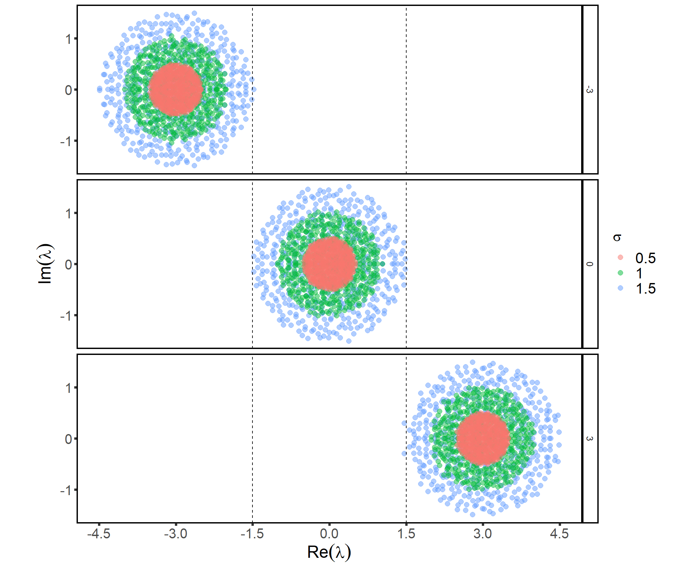
Given a matrix with S=250 and a self-regulation value of -1.5, what is the necessary variance of the interactions to make it stable? Show analytically and computationally.
The stability bound (the condition for the rightmost eigenvalue to have negative real part) is given by √SC⋅σ<−d. Therefore, setting the diagonal to −√SC will set the threshold for stability at σ=1. So, for large S, the system is expected to be stable when σ<1.
S_seq <- c(25, 50, 100) # A curve per network size
nsim <- 100 # Generate multiple random matrices for each S
sigma_seq <- seq(0.8, 1.2, 0.01) # vary sigma
C <- 0.15
# Function to create a matrix and test if its righmost ev is negative.
stable_matrix <- function(i){
M <- matrix(runif(S^2, min = -sqrt(3)*sigma, max = sqrt(3)*sigma) * rbinom(S^2, size = 1, prob = C), S, S)
diag(M) <- 0
M <- M + diag(S) * d
e <- eigen(M, only.values = TRUE)$values
return (max(Re(e)) < 0) # The rightmost eigenvalue should be negative for the matrix to be locally-stable
}
# Calculate the probability of stability for each combination of network size and sigma.
prob_stability_df <- NULL
for (S in S_seq){
print(S)
d <- -sqrt(S * C) # Set the diagonal to sqrt(SC) to make sigma=1
for (sigma in sigma_seq){
num_stable <- 0
for (i in 1:nsim){
num_stable <- num_stable+stable_matrix() # If the matrix is stable at it ot the count.
}
p_stability <- num_stable/nsim
prob_stability_df <- rbind(prob_stability_df, data.frame(S=S, sigma=sigma, p_stability=p_stability))
}
}[1] 25
[1] 50
[1] 100prob_stability_df %>% ggplot(aes(x = sigma, y = p_stability, colour = factor(S), shape = factor(S))) +
geom_point(size = 3) +
geom_line() +
mytheme +
xlab(expression(sigma)) +
ylab(expression(p[stab])) +
scale_colour_discrete(name = "S") +
scale_shape_discrete(name = "S") +
geom_vline(xintercept = 1, linetype='dashed')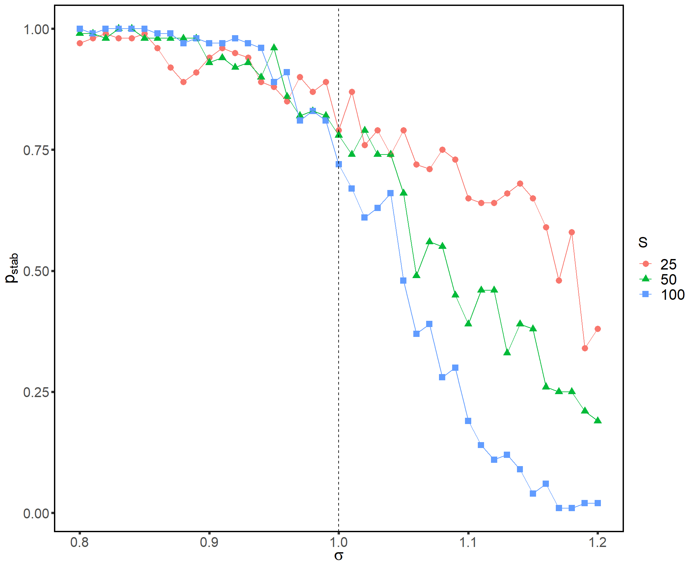
How does the probability of stability depend on the number of species? Why? Try to increase the number of species.
The mean “determines” if interactions are more likely to be mutualistic (positive mean) or antagonistic (negative mean). Adding a constant to M without perturbing the diagonal will move one eigenvalue to approximately μ(S−1)+d. Where this eigenvalue falls with respect to the original spectrum can influence the stability. The more positive the mean, the more positive the eigenvalue and the higher the probability to destabilize the system.
S <- 500
mu_seq <- c(-0.1, 0.01, 0.1)
outliers <- tibble(x = (S - 1) * mu_seq-sqrt(S), y = 0, mu = mu_seq) # Estimation of where the ev will fall
data_eigenvalues_mean <- map(mu_seq, # map is instead of using for. it maps a function to each element of the vector mu_seq
function(mu){
M <- matrix(runif(S^2, min = -sqrt(3), max = sqrt(3)), S, S)
diag(M) <- -sqrt(S)
M <- M + mu - diag(S) * mu
e <- eigen(M, only.values = TRUE)$values
tibble(x = Re(e), y = Im(e), S = S, mu = mu)
}) %>% bind_rows()
data_eigenvalues_mean %>% ggplot(aes(x = x, y = y)) +
geom_point(size = 1.3, alpha = 0.5) +
mytheme +
xlab(expression(Re(lambda))) +
ylab(expression(Im(lambda))) +
facet_grid(mu ~.) +
coord_fixed() +
geom_point(data = outliers, size = 2, colour = "red")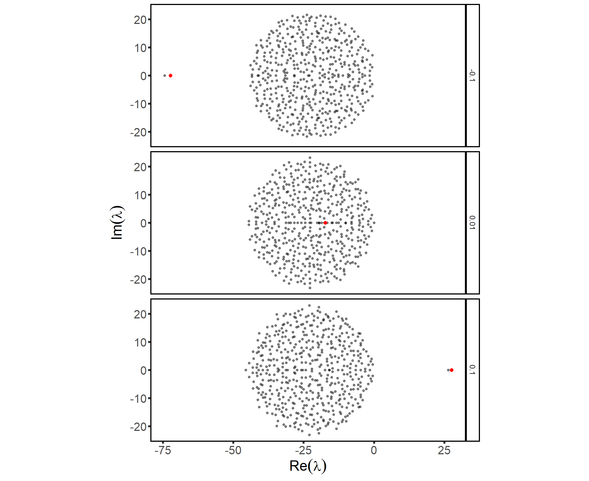
Try to examine the role of the mean for a different distribution than uniform (in line M <- matrix(runif(S^2, min = -sqrt(3), max = sqrt(3)), S, S))
Until now, Mij was independent of Mji. But in ecology this is not necessarily the case. For example, assuming μ=0, negative corelation is like prey-predator (+/-) and positive is like competition (-/-) or mutualism (+/+). When ρ=0, the eigenvalues fall on a circle, which is what we have seen so far. When ρ≠0, the eigenvalues fall on an ellipse. Negative correlation (ρ<0) shrinks the real part, whereas positive correlation (ρ>0) shrinks the imaginary part. So a negative correlation tends to stabilize the system.
S <- 300
rho_seq <- c(-0.75, 0, 0.75)
generate_eigenvalues_cor <- function(rho){
M <- matrix(0, S, S)
Sigma <- matrix(c(1, rho, rho, 1), nrow = 2) ## set 2x2 covariance matrix
M <- diag(rnorm(S)) ## set the diagonal, notice thas as long as it has mean 0 it can have a variance
for(i in seq(1, S - 1)) {
for (j in seq(i + 1, S)){
Z <- mvrnorm(1, c(0,0), Sigma) # Now sample from a bivariate normal distribution with vector of means (0,0) and covariance matrix Sigma
M[i,j] <- Z[1] ## Set the offdiagonal pairs of M
M[j,i] <- Z[2]
}
}
M <- M / sqrt(S) # Rescale EV
e <- eigen(M, only.values = TRUE)$values
data_frame(x = Re(e), y = Im(e), S = S, rho = rho)
}
data_eigenvalues_cor <- map(rho_seq, generate_eigenvalues_cor) %>% bind_rows()
data_eigenvalues_cor %>% ggplot(aes(x = x, y = y, colour = factor(rho))) +
geom_point(size = 2.5, alpha = 0.5) +
mytheme +
xlab(expression(Re(lambda))) +
ylab(expression(Im(lambda))) +
scale_colour_discrete(name = expression(rho)) +
coord_fixed() +
scale_x_continuous(breaks = c(1 + rho_seq, -1 - rho_seq)) +
scale_y_continuous(breaks = c(1 - rho_seq, -1 + rho_seq))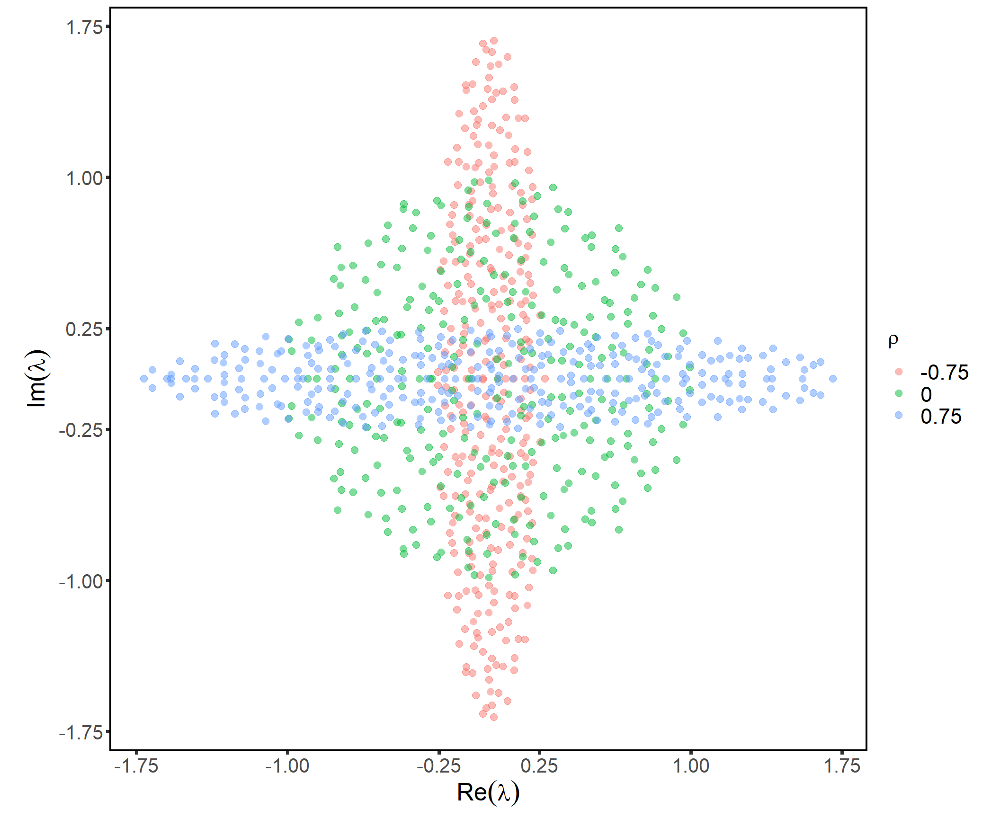
We have changed parameters that influence interaction weights, but M was not structured. That is, the interactions were distributed randomly. Let’s see how adding blocks (modules) affects local stability. In the following example, each module has a random structure. We have already seen that when μ≠0, one eigenvalue was shifted to μ(S−1)+d. Now, this quantity may have different values for each of the blocks because the size of the block is different, and because it is also affected by the sign of the modularity. In particular for two blocks, there would be at most two outliers given approximately by the eigenvalues of the matrix of means, which is a block structured matrix having in each block a constant value depicting the mean interaction strength between the respective groups.
S <- 100
C <- 0.4
alpha <- 1/4
m <- S * alpha ## size of the top module
sigma <- 1
mu_seq <- c(-1/4, 0, 1/4)
#n <- length(mu_seq)
rho_seq <- c(-1/4, -3/4, -0.5)
Q_seq <- c(-0.5, 0, 0.35) # This is the modularity
generate_K <- function(Q){
K <- matrix(0, S, S) ## adjacency matrix
Cw <- C * (1 + Q/(alpha^2 + (1-alpha)^2)) # within block connectance
Cb <- C * (1 - Q/(2 * alpha * (1-alpha))) # between block connectance
# Between-block interactions
AB <- matrix(runif(m * (S-m)) < Cb, m , S - m)
# Within-block interactions
K[1:m, 1:m] <- matrix(runif(m^2) < Cw, m, m)
K[(m + 1):S, (m+1):S] <- matrix(runif((S - m)^2) < Cw, S - m, S - m)
# Add the between-block interactions to K
K[1:m, (m+1):S] <- AB
K[(m+1):S, 1:m] <- t(AB)
return(K)
}
generate_M <- function(mu, rho, K, Q){
M <- matrix(0, S, S) ## Community matrix
Sigma <- matrix(c(sigma^2, rho * sigma^2, rho * sigma^2, sigma^2), nrow = 2) # Covariance matrix for bivariate normal distribution
# Fill in M with interaction values
for(i in seq(1, S - 1)) {
for (j in seq(i + 1, S)){
if (K[i,j] > 0){
Z <- mvrnorm(1, c(mu, mu), Sigma) #
M[i,j] <- Z[1]
M[j,i] <- Z[2]
}
}
}
return(M)
}Let’s see how these matrices look like
# Plot the matrices
K <- generate_K(0.35)
heatmap(K, Rowv = NA, Colv = NA, symm = F, scale = 'none', revC = T, col=brewer.pal(2,"RdBu"))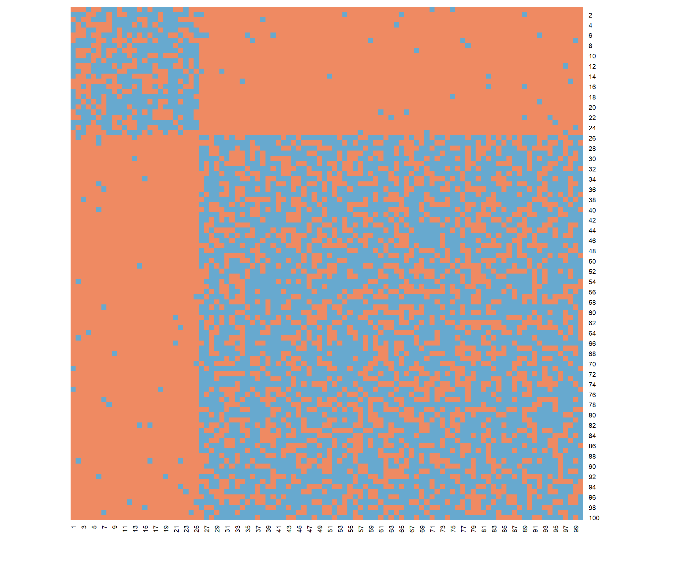
M <- generate_M(0, 0.5, K)
heatmap(M, Rowv = NA, Colv = NA, symm = F, scale = 'none', revC = T)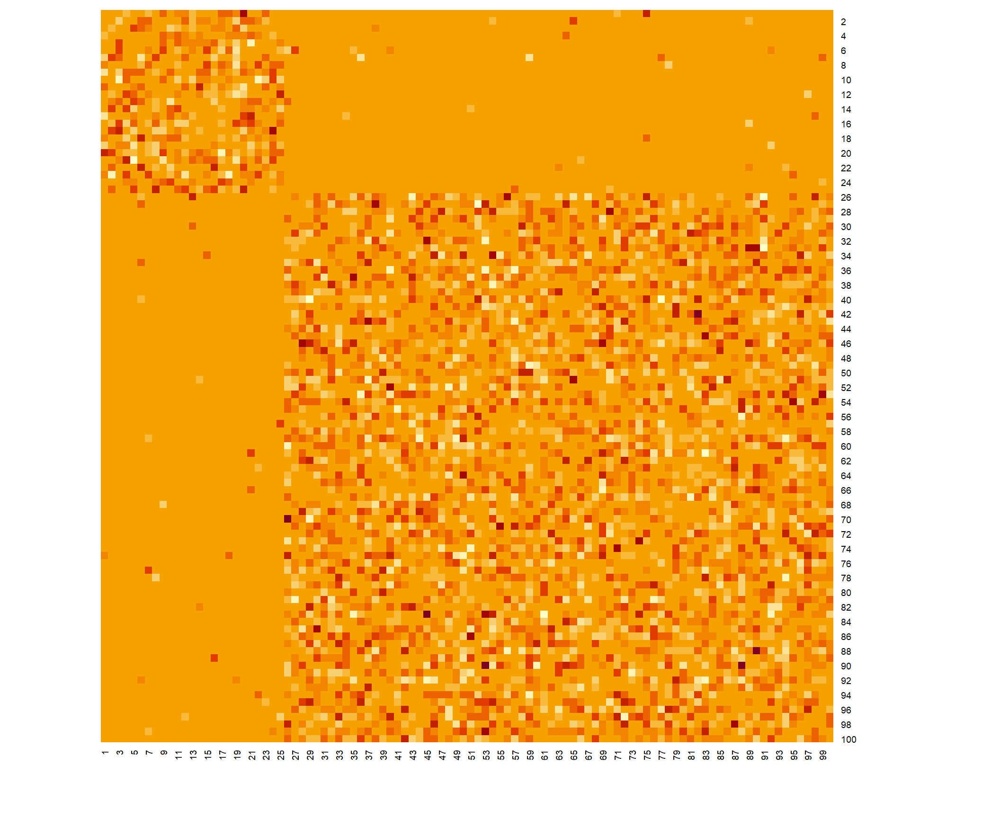
Now find the stability.
data_modules <- NULL
data_outliers <- NULL
for (Q in Q_seq){
K <- generate_K(Q)
for (i in 1:length(mu_seq)){
mu <- mu_seq[i]
rho <- rho_seq[i]
print (paste(Q, mu, rho))
M <- generate_M(mu, rho, K, Q)
# Get the eigenvalues of M
e <- eigen(M, only.values = TRUE)$values
data_modules <- rbind(data_modules, data_frame(x = Re(e), y = Im(e), S = S, mu = mu, rho = rho, Q = Q))
## the following calculates the eigenvalues for the matrix of means + a small correction
## given by the correlation
Cw <- C * (1 + Q/(alpha^2 + (1-alpha)^2)) # within block connectance
Cb <- C * (1 - Q/(2 * alpha * (1-alpha))) # between block conenctnve
mu_w <- Cw * mu
mu_b <- Cb * mu
data_outliers <- rbind(data_outliers,
tibble(x = S/2 * (mu_w + c(1,-1) * (sqrt((1 - 4*alpha * (1- alpha)) * mu_w^2 + 4 * alpha* (1-alpha) * mu_b^2))), correction = ifelse(x !=0, rho/x, 0), y = 0, S = S, mu = mu, rho = rho, Q = Q)) # This line is taken from the paper.
}
}[1] "-0.5 -0.25 -0.25"
[1] "-0.5 0 -0.75"
[1] "-0.5 0.25 -0.5"
[1] "0 -0.25 -0.25"
[1] "0 0 -0.75"
[1] "0 0.25 -0.5"
[1] "0.35 -0.25 -0.25"
[1] "0.35 0 -0.75"
[1] "0.35 0.25 -0.5"data_modules %>% ggplot(aes(x = x, y = y, colour = factor(mu))) +
geom_point(size = 2.5, alpha = 0.5) +
geom_point(data = data_outliers, aes(x = x + correction), colour = "red") +
mytheme + xlab(expression(Re(lambda))) +
ylab(expression(Im(lambda))) +
scale_colour_discrete(name = expression(mu))+
coord_fixed() +
facet_grid(Q ~ mu,
labeller = label_bquote(cols = paste(mu," = ",.(mu), collapse = ""),
rows = paste(Q," = ",.(Q), collapse = "")))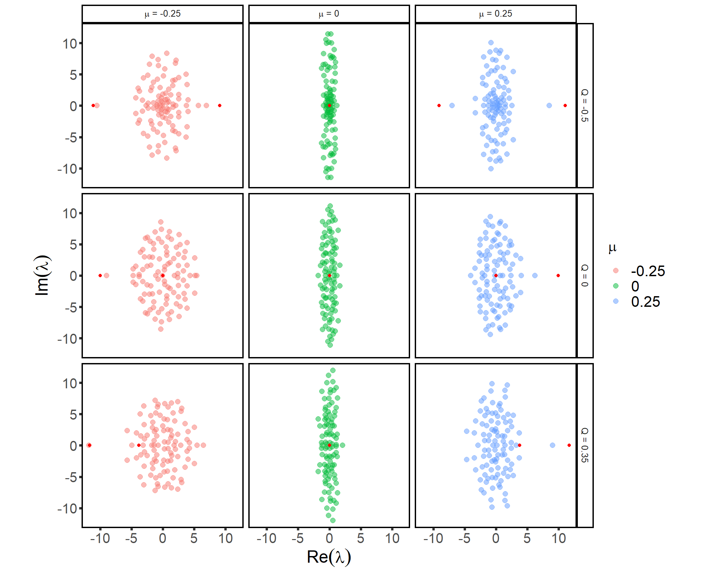
What do you notice about the effect of modularity vs. anti-modularity on the outlier eigenvalues?
To get a sense for what is involved in obtaining the linear approximation of a nonlinear system close to equilibrium, consider the Lotka-Volterra competition system in the paper by Maynard et al. (Ecology Letters 2018). You need to first find the equilibrium vector for species abundances, say x∗. Then, you would compute the Jacobian matrix J and evaluate it at this equilibrium to obtain the community matrix.
A general expression for x∗ is given in the paper, but show the steps (only a couple of lines of simple algebra). Then show the analytical formula for the Jacobian J and the corresponding community matrix for the nxn system.
Finally, explore the eigenvalues of the community matrix for different parameter sets computationally. For this, set the number of species n to some given value of your choice, choose the interaction parameters aij (i≠j) at random, and make all the growth rates ri=1 and the self-regulation parameters aii=−1.
n <- 500
A = matrix(runif(n^2),nrow=n, ncol=n )
diag(A) <- -1
r <- rep(1,n)
D_r <- diag(r)
# plot matrix A in heatmap
heatmap(A, Rowv = NA, Colv = NA, symm = F, scale = 'none', revC = T)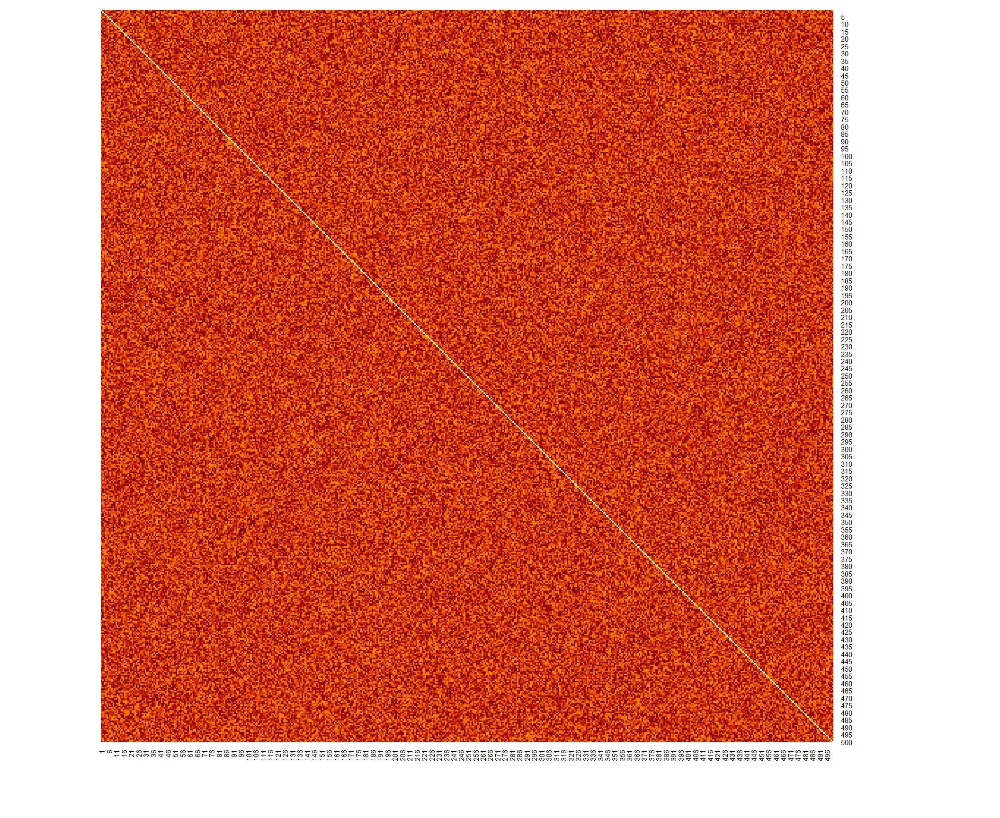
# 1. solution
x_star = solve(A, -r)
# 2. Community matrix
M = diag(x_star) %*% A /sqrt(n) # # Normalize by square root of n
# 3. Get eigenvalues
e <- eigen(M, only.values = TRUE)$values ## compute the eigenvalues of M
data_eigenvalues <- tibble(x = Re(e), y = Im(e), S = S) ## data frame storage useful for plotting with ggplot
# plot
data_eigenvalues %>% ggplot(aes(x = x, y = y)) + geom_point() + mytheme + coord_fixed() + geom_vline(xintercept = 0, color='blue')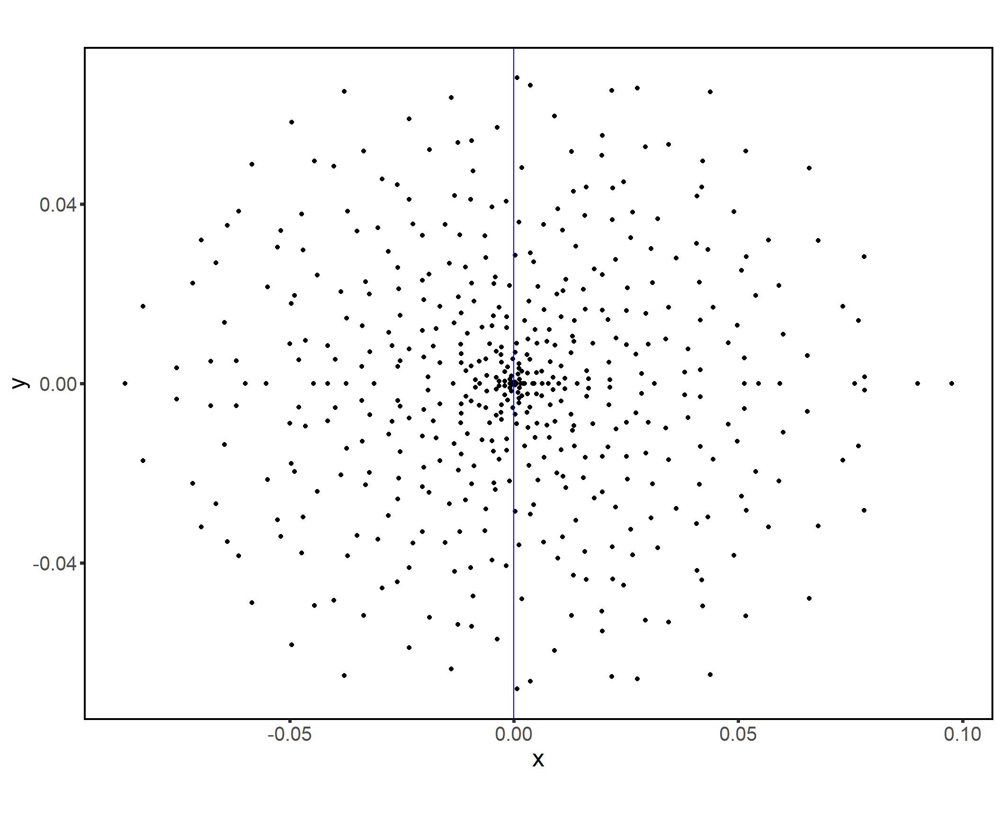
For different samples of the interaction parameters, obtain the corresponding eigenvalues and plot them in the 2-D space of their real and imaginary parts. Where do they fall? Why?
The values fall within the circle with radius of 0.5. It is circular because of the circular law. σ will change the radius of the circle and here σ is 0.5. Dividing the elements of community matrix M with √S normalizes the radius of the circle to be σ.
sessionInfo()R version 4.0.3 (2020-10-10)
Platform: x86_64-w64-mingw32/x64 (64-bit)
Running under: Windows 10 x64 (build 19042)
Matrix products: default
locale:
[1] LC_COLLATE=English_United States.1252
[2] LC_CTYPE=English_United States.1252
[3] LC_MONETARY=English_United States.1252
[4] LC_NUMERIC=C
[5] LC_TIME=English_United States.1252
attached base packages:
[1] stats graphics grDevices utils datasets methods base
other attached packages:
[1] RColorBrewer_1.1-2 MASS_7.3-53 magrittr_2.0.1 forcats_0.5.1
[5] stringr_1.4.0 dplyr_1.0.5 purrr_0.3.4 readr_1.4.0
[9] tidyr_1.1.3 tibble_3.0.4 ggplot2_3.3.3 tidyverse_1.3.1
[13] igraph_1.2.6 workflowr_1.6.2
loaded via a namespace (and not attached):
[1] Rcpp_1.0.5 lubridate_1.7.10 ps_1.6.0 assertthat_0.2.1
[5] rprojroot_2.0.2 digest_0.6.27 utf8_1.1.4 R6_2.5.0
[9] cellranger_1.1.0 backports_1.2.1 reprex_2.0.0 evaluate_0.14
[13] highr_0.9 httr_1.4.2 pillar_1.6.0 rlang_0.4.10
[17] readxl_1.3.1 rstudioapi_0.13 whisker_0.4 jquerylib_0.1.4
[21] rmarkdown_2.7 labeling_0.4.2 munsell_0.5.0 broom_0.7.6
[25] compiler_4.0.3 httpuv_1.6.0 modelr_0.1.8 xfun_0.22
[29] pkgconfig_2.0.3 htmltools_0.5.1.1 tidyselect_1.1.1 fansi_0.4.2
[33] crayon_1.4.1 dbplyr_2.1.1 withr_2.4.2 later_1.2.0
[37] grid_4.0.3 jsonlite_1.7.2 gtable_0.3.0 lifecycle_1.0.0
[41] DBI_1.1.1 git2r_0.28.0 scales_1.1.1 cli_2.5.0
[45] stringi_1.5.3 farver_2.1.0 fs_1.5.0 promises_1.2.0.1
[49] xml2_1.3.2 bslib_0.2.4 ellipsis_0.3.1 generics_0.1.0
[53] vctrs_0.3.6 tools_4.0.3 glue_1.4.2 hms_1.0.0
[57] yaml_2.2.1 colorspace_2.0-0 rvest_1.0.0 knitr_1.33
[61] haven_2.4.1 sass_0.3.1